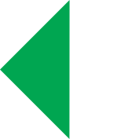
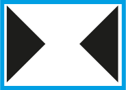
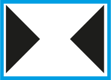
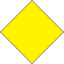
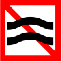
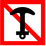
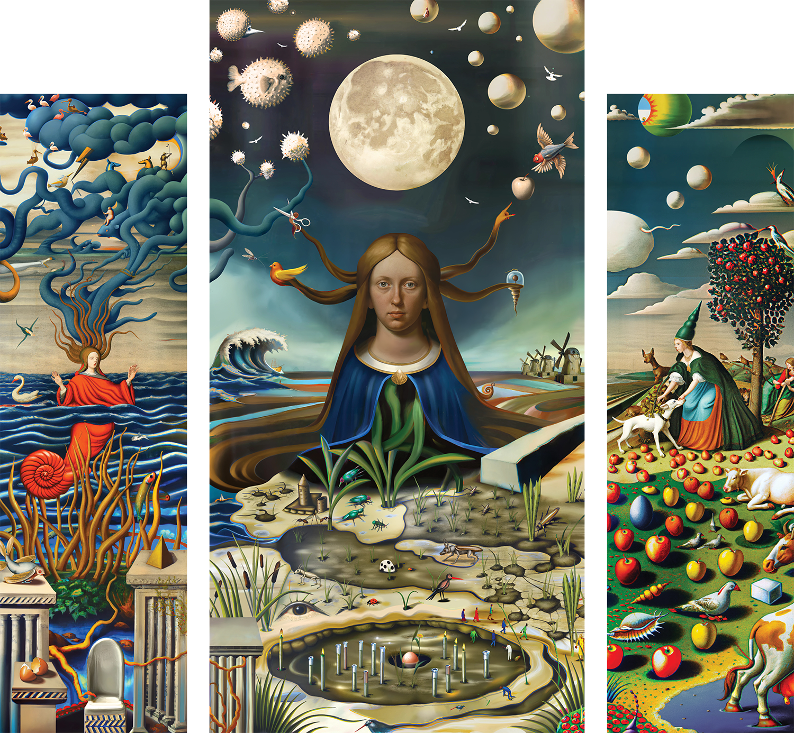
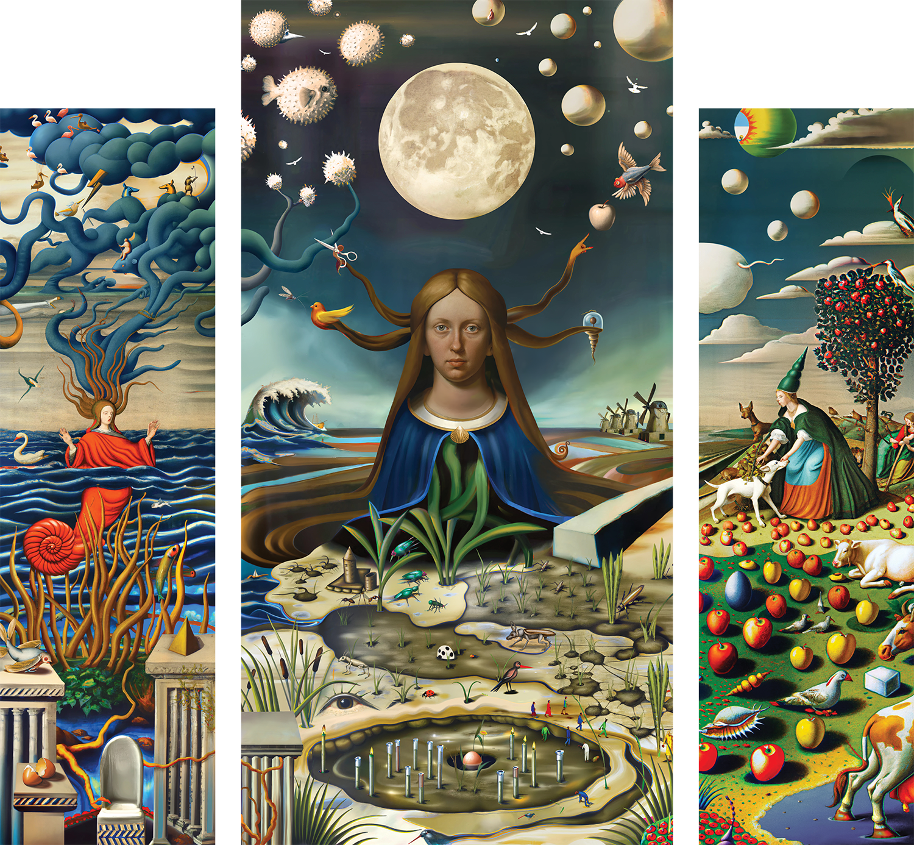

abstract
What can a journey along a canal in the Netherlands bring you? The Netherlands is the
flattest country in Europe. Because of its retrieval from the sea, it created a unique relation and control over nature, but does nature exist in the Netherlands? And how does storytelling and identity enforce the nation as a symbol for water management?
Analyzing both inside and outside of the surface, it’s a consideration of whether we are still safe in the future in the dikes. What can we learn from listening to entities? Further down, it opens the countries fight and paradoxes towards the beaver and its complex relationship in the country. Fieldwork with a forest ranger will offer a new scope on a threat inside our dikes, and a broken 5,000-year-old relic may hold the answer to all uncertain questions.
Balanced out by snippets from an exploration alongside a canal, where a group of fat bikers passes by, a disappointing UFO landing site, and a fish doorbell offer unexpected perspectives on coexistence. What happens upstream? The current is drawing me in to know what happens at the end. If people are determined by their landscape, then what can I learn from a human-made world?

interlude
I like going outdoors. Living on the margins of Amsterdam-East provides a welcoming surrounding to go straight into nature. Through the park, on the gravel, past the playground, over the slippery wooden bridge, and out at the swimming pool onto the bricks. Next to an underpass that covers a car park, where people play music, do balloons, and write on the walls. Under yellow streetlights. Pass by this, and you get up to the dike where the wind blows. Antennas whirl unseen information into the sky. You are greeted by the Amsterdam-Rijnkanaal, a canal that was excavated between 1933 and 1952. Designed by Anton Mussert, leader of the NSB party, the leading party under the Nazi occupation.
I used to be a runner, sometimes competitively. This habit started around the time I began these studies, working late at the academy in The Hague, getting back around 8 or 9 p.m. I would drop my stuff and go out. This was such a good way to loosen up and allow my mind to wander off topic and reflect. There were no other people, and there was mostly silence,apart from the water flow. After doing it for a while, the surroundings started to feel so familiar that I lost interest in running. I think this has to do with the flatness of the country because as you progress in training, you run longer distances, and with no hills or mountains to pass through, it became a liminal and boring experience. However, the limits of my route made me wonder what happened beyond the area I was familiar with.
The Amsterdam-Rijnkanaal used to be a place to go swimming in the summer. We would take our towels, get some fruit and drinks from Albert Heijn, and lay on the docks of Bogortuinen for the whole day. People made amazing jumps into the water and tanned. All this changed one day when we were eating pizza on the shore, and police and ambulances arrived, as well as a special boat diving team. We got escorted away but caught a glimpse of a purple-grey-colored body being hauled into the boat. As it moved out of sight at high speed, resuscitation was taking place. The man died because after he jumped into the water, his feet got tangled in a bike at the bottom. I never swam there again.
This event made me realize that this canal carries more stories and made me wonder what other stories are happening along the canal. And what is the relationship between the Dutch and water? Water reoccurs in all kinds of contexts, but in history, it is depicted as an enemy—something to be tamed, or we risk a flood. This made me start to question our relationship with water and how this mythmaking translates into symbolic meaning—if we will drown one day.
When all nature is considered human-made, and every little piece has a purpose, is there any place for wildness in the landscape? Why is nature seen as a separate thing? To get an answer, I will follow the canal from Amsterdam down to Tiel by foot and bike; to gather stories and firsthand observations as well as interviews to see what happens on this canal.
Therefore, I consider walking and cycling, as well as fieldwork, my active research method, and storytelling and desk-based research my static research method—to understand more about the historical and factual aspects of the human-nature relationship, particularly water and its inhabitants. The goal is to understand the relationship between Dutch nature and its role in culture, and how the victory over environmental conditions shaped the identity of a nation. How a reintroduced animal is causing conflict between planning and roaming, and how a more animistic view can help grant us a more holistic future. In between the factual text, there are snippets from my journal that offer a perspective into the observations on this journey, contrasting the subjective experience with academic writing.
I’d like to highlight the importance of going out to do research with a quote from Cocky van Eek in the Slow Spatial Reader:“The great thing about working outdoors is that the whole body automatically comes in a higher vibrant state when exposed to the rich continuum of the interconnected layers extending from our organism inward and outwards. Asking the Landscape, who are your relations? The field gives very direct feedback and asks you to take a position in the midst of complex matters.”

Chapter 1: Life and Catastrophe
Perfect Storm
In 1953, a dark, powerful storm sailed from Scotland over the North Sea toward the
Netherlands. It rained intensively, and as the sea level rose, 500 dikes gave in and broke, flooding the land and causing thousands of casualties, both human and farm animal. Being the biggest flood ever recorded in the Netherlands , it left the country in shock and trauma, marking the nation’s fear of the danger of water. We worked together to get the water out of the country and rebuild everything that was broken, but more than that, we had to come up with a plan for radical change. Rebecca Solnit argues that “disasters create liminal spaces where new social possibilities emerge. That in these disrupted landscapes, people briefly experience alterna It is in this disrupted landscape of the flood’s aftermath that such a moment arose, a moment of radical rethinking of Dutch water management.
I start my journey up on the canal next to the park, I hear a hummmmmmm come closer. Followed by an alarm UUUUrrrr. It's 3 kids on a fatbike. It's an electrically powered bike with big wheels that replaced the blue license plate scooter. For sure they are going too fast, but the bike seems to be a heavy topic in the Netherlands. Invading the crucial purple/pink coloured bike lane with its size and speed. The government tried banning them, but the rule was made so specific that the developers narrowed the wheel size down by 5cm to make them usable again. The topic divides the nation and provides something to hate on. Personally, I don't really get it. It's an object.
superstructures
There was a general concern about the possibility of a new disaster happening, and with the most damage being done in the province of Zeeland, this became the location destined for radical change. This change came in the idea of building a structure designated to resist and moderate the water. The revolutionary project is called the Deltawerken—gigantic superstructures designed to control and keep the high water from the North Sea out of the Netherlands, ensuring that there would never be a flooding disaster again. Built over the course of 20 years, it consists of connected cathedral-sized pillars placed along the coastline,functioning as a barrier and mediator between the salt water from the sea and the freshwater from the river estuary. Journalists from foreign countries saw this happening in the Netherlands and dubbed us the “masters of floods.” The Deltawerken is now considered one of the modern wonders of the world. But, as Winfried Bajiens mentions in his program Waterman, “how impressive they may be, they are not a solution to modern-day problems.” This is echoed by Rutger Bregman in his book Het Water Komt, who argues that the old ways of dealing with rising water are unachievable and costly—we have to look for other alternatives. With the Netherlands projected to be drowned in the next 100 years due to rising sea levels , a new solution isnecessary and urgent, and can originate from a different point of view.
Culture > Nature
The Netherlands is known from its history and the ability of retrieving land from the sea , and in doing so, the act of reclamation has coined a famous Dutch saying, “God created the world, but the Dutch created the Netherlands” .
The saying symbolizes how we, as inhabitants, perceive ourselves in relation to nature. In contrast to other cultures, nature is considered something that can be taken, twisted, and manipulated into culture, indicating that the people already owned the land before it was taken from the sea—it never had its own life.
It is this perspective that Bruno Latour critiques in Politics of Nature, where he argues “that modernity allows science to mobilize nature while simultaneously denying that nature has been mobilized.” In this vision, nature is stripped of agency—it is an object to be engineered, controlled, and made productive.
However, Dutch folklore has once considered the water to be alive, but more through the metaphor of the water wolf. It symbolizes the centuries-long struggle of the Netherlands against floods and water management. Historically, this image was used to describe the unpredictable and devastating power of water, as if it were a living, predatory entity. On the one hand mastering it, but always aware of its unpredictability.
Symbolism
As mentioned before, land reclamation has become a national symbol, emphasized in history books and retold as a heroic narrative that fosters a sense of unity. Resonating to the principle of Memory studies, this memory of a shared past that serve important values for group & individual identity shaping. If we repeat the stories, the narrative stays alive. These kinds of stories are supported in a fairy tale like Hans Brinker, in which a boy saves the country by plugging a hole in a dike with his finger. It is these kinds of symbols/myths that serves as tools to reinforce this national cohesion an enemy without human form that unites people across religions and class. This narrative teachtes that nature must be controlled, engineered, or exploited to sustain human life.

Hans Brinker or The Silverskates
Cover of the Folklore story Hans Brinker (1970)
There is not a lot going on after Muiden, it's mostly fields and big ships. Hard wind in the face and some swirling antennas. A lot of factories and electricity plants are located next to the canal. I see a fisherman and I go over to talk to him. He doesn't eat his catch, but him and his friends love to do sportfishing, he says the conditions get tougher downstream since the bank is not so high. They hold yearly competitions on this canal, but he does not like it. That means the fish become smarter, so they know when not to bite the bait.
Our relationship with water is embedded in terrain and history, as well as in our given and self-built image as logic-defiers and heroes who reclaim land and triumph over environmental disasters. Yet always from a point of divide between us and that, with the dike and the Deltawerken embodying that split. This way of thinking is what I consider wrong, because, as Rolando Vázquez points out in Buen Vivir, “the modern/colonial rule over ‘the real’, it operates through the control of the production of that reality and over its visibility and intelligibility.” In this context, the mentioned symbols of Hans Brinker, waterwolf and the deltawerken form a part of the production of that reality keeping this separation between human and nature alive, because water is also our life source — we are made of water, and we drink it every day.
Although I am thankful for these interventions in the landscape that allowed me to live in a place like Amsterdam, I do believe that we might need to reconsider how we perceive water in a symbolic sense.

Chapter 2: Fieldwork & Conflict
If water and canals are contained and moderated carefully to ensure people's safety, then where do non-human inhabitants fit into this plan? The beaver has been reintroduced in 1988 following its human-caused extinction in 1826.  Although the re-introduction is considered a successful integration, the population is growing to a size where they started to settle in places where they were not planned to be, conflicting with the careful landscape planning. Building dams, lodges and digging holes in the dikes to create their own landscape.  There are ongoing discussions about whether they have a place here. To understand how they can coexist with humans in a country that is running out of space, is there a place for reintroducing terrain-adaptive animals in the Dutch landscape? To answer that question, I am doing fieldwork with the forest ranger Jonathan Leeuwis to get his opinion on the subject.Jonathan is the forest ranger of the area where the Amsterdam-Rijnkanaal ends.
Although the re-introduction is considered a successful integration, the population is growing to a size where they started to settle in places where they were not planned to be, conflicting with the careful landscape planning. Building dams, lodges and digging holes in the dikes to create their own landscape.  There are ongoing discussions about whether they have a place here. To understand how they can coexist with humans in a country that is running out of space, is there a place for reintroducing terrain-adaptive animals in the Dutch landscape? To answer that question, I am doing fieldwork with the forest ranger Jonathan Leeuwis to get his opinion on the subject.Jonathan is the forest ranger of the area where the Amsterdam-Rijnkanaal ends.
It is 8 a.m., and I meet Jonathan at the rusty gates between the trees. Jonathan is a tall man with reasonably big boots and a smile on his face, blond hair, and a very enthusiastic demeanor. We jump into his car, and we start driving—slowly, so as not to intrude on the creatures by any chance. We are on the lookout for beavers.
The beaver was reintroduced in the Netherlands following its extinction in 1826, when the last one was killed by a fisherman near the IJssel—he mistook it for a fish. They were mostly hunted for their dense fur, meat and castoreum. castoreum is a tar-like material that was generally used in food flavourings, such as vanilla as well as perfumes. They were hunted for their meat because the tale has scales, therefore the church considered it a fish so it was eaten on Christian holidays.

Jonathan says. Whilst the re-introduction is generally considered a success because of the increase in wetlands and improvement of biodiversity in the surroundings they inhabit. The narrative seems to be shifting. For the re-introduction was done at designated areas where the altering of the landscape was permitted, but the beavers started roaming beyond their placement and settled in unwanted places. They became unwanted in these places because they dig holes in dikes and build dams, leading to costly repairs for the government and, more importantly, posing a risk to human settlements nearby due to the threat of flooding. In Limburg, the southernmost province, authorities have started killing the first beavers, even though they are on the list of protected animals.
An exception was made because the threat of flooding is much larger and direct in comparison to the rest of the country. But, as James Bridle points out so well, is that “the whole ecosystem depends on freedom of movement, over an area far greater than that set aside specifically for wildlife.”
I asked Jonathan if he thinks that humans and animals can co-exist, given that the beavers are only welcome in certain areas. He thinks it is possible, because we seem to be more aware of how we deal with animals and the positive influences they have on the landscape & how they are thoroughly connected to the landscape and us. It relates to what James Bridle suggests in Ways of Being, where “we can declare solidarity with the more-than-human world by acknowledging the radical differences that exist between ourselves and other beings. To learn, co-operate and benefit from each other's differences.”
There seems to be an intrinsic connection between the beaver and the Dutch people. Altering the landscape for their own sake of survival.


Beaver spotting:
Treetrimmings of a beaver for dambuilding
Heatcamera to spot the beavers in the lodge.
Beaverlodge in the Biesbosch.
Human & Non-human
Jonathan knows that in a place like Zuid-Holland Rieverenland it is a tough job trying to co- exist, but not impossible. He believes in a non-hierarchal structure. I think that this mentality is a good example of what a more-than-human politics look like: “the careful and conscious attention to the needs and desires of others, the acknowledgment of their agency and value, and the willingness to adapt our existing structures of society and place to better account for all of us.” We spent the rest of the day driving and walking, but without luck. We did not see a beaver unfortunately.
I am still cycling and go downwards through Utrecht; I make a small detour to look at the fish doorbell, but it’s not turned on right now. This is an innovative project to facilitate both fish and human in a holistic and beneficial way. Because the lock was made as a passage for humans, it blocked the fish to swim upstream to lay eggs. Therefore the fish doorbell was introduced on an online web came to see when fishes would be “waiting” to enter, and viewers could message the lock operator so the fish could be let through.

Fishdoorbell
Screenshot from the livestream underwater camera, fish waiting to be let in.
Rewilding as s step forward?
Rewilding is a concept with “the goal to help slowing down the process of climate change, create space for non-human entities, flood reduction and help to produce clean water and air. When we talk about human rewilding, it's not about enforcing the strict border between humans and nature, but about the interlacing of these entities”. I find this idea exciting, because this concept contradicts the previously described Dutch relationship the landscape, and the lack of space, it questions our position in it and provides agency to non-human untities.
I’m in Houten and its dark outside, my phone died, and my camera is nearing exhaustion. I really wanted to go here because, I was looking for UFO sightings in The Netherlands and in this town there is a “UFO Landing sight”, a public artwork to welcome aliens. It was a real disappointment. It is a highway with a strange tower next to it.
Modern Habitats
Maybe it’s not so strange what Wiet van Bragt jokingly suggests in the TV show Wildernis onder water: “if only we could sit around the table with the beaver and negotiate with them!” Although I don't think we can sit around the table with beavers, I do think that the acknowledgement of them as living things with needs and space is an important step forward, for it was humans who are the ones that reintroduced them. I believe that we can take agency and listen more to what nature & non-human entities can tell us, instead of perceiving them as silent or as some kind of representation.

Chapter 3: A different perspective
I say my goodbyes to Jonathan and move upwards to the place of splitting, Tiel.
I realise that the canal is telling stories, but if you want to tell a story you should be alive and have agency?
Personified future
To declare an entity as a legal person, however narrowly defined, is not merely to admit it to a court of law. It is to declare it alive, in which we have struggled to articulate since the eclipse of animism. The moment we declare non-human entities as humans, the definition of, and understanding of and relation to life changes. The world re-populates. The shift started to ask, what can we take from the river? To what do we want for the river and how do we get there with the river?  It’s interesting to consider that this way of looking is not new to the Māori tribe of New-Zealand. In the documentary “I am the River, the River is me” we follow Ned, a Māori tribe member and as he canoes down the river Whanganui, he explains the relationship of the Māori regarding the landscape. When you introduce yourself, you mention your mountain, your river, your tribe and lastly, your name. The river symbolizes a connection between the tribe and the ancestors, for they are embodied in the landscape, calling it Tupuna. It's the first time that a framework stems from the spiritual values of an indigenous belief system.  This act results in a way where the word nature does not exist and the division between culture and nature blurs to become one. It's these indigenous ways of looking that can possibly help our future. Although I am questioning wether a country like the Netherlands will be able to turn the water into an entity, the thought is already interesting.
River Whanganui:
The river that became a legal and protected entity in the law of New Zealand.
The river used to be a wild mythological force in folktales and oral culture. But science & logic has replaced mysticism and fantasy, it became a problem to be solved. Maybe we need to look at it more through an animate way and let it do its thing. Seeing its potential as a co-operator.
Tribal Netherlands
“Shifts result from well-organized communities creating new institutions that meet peoples’ needs as responses to the shocks and slides better than the dominant systems can, such as food sovereignty projects, collectivized housing systems, cooperative economics (time banks, worker co-ops, food shares, community-based restorative justice projects, etc.)”  If the New-Zealanders can learn from the Māori, from what tribe could the Dutch learn? Its interesting to consider that “from the modern conception of time perspective, the ancestors belong to fixed genealogies of the fiction of mythologies.” It is this kind of relationality between the old and the new that can become the source of understanding and possibly a way forward. Archeological findings confirmed that The Netherlands was already inhabited by tribes long before the invasions of the romans and Christianity. By the then, Germanic tribes with their own ways, believes and spirits. When they were alive, land would regularly flood, and rivers would regularly break their banks. A fishermen recently discovered stones on the bottom of the North Sea that led to the re-discovery of Nehalennia, the water spirit of the Germanic tribes that inhabited Zeeland. She is the deity that tribes would turn to when the water acted unpredictable and for safe passage. As mentioned before, there is a realization in science that we can’t keep fighting the sea or build higher dikes. But instead, Like Buen Vivir proposes, “we should be looking for ways to work with nature, becoming one whole instead of a separation.” We might need to give back some of the land to the sea & river. We need to remove the hard border between land and sea, and sometimes it can be hard to find ways in which we can get that message across, but it’s here where Nehalennia can function as a symbol to do so.  And with a temple reconstructed in Zeeland to honour Nehalennia, this can be our tribal knowledge to accept the water as a living entity.
And with a temple reconstructed in Zeeland to honour Nehalennia, this can be our tribal knowledge to accept the water as a living entity.

 

Nehalennia in the Netherlands:
The reconstructed Nehalennia temple in Zeeland, build in the style of that time around 500 B.C
One of the retrieved Nehalennia shrines from the seabed.
Trip-tych made fof SEA-MUD land, 2022
pass by a couple of amateur football fields and a carriership passes sails in the opposite direction with containers on the middle deck, a dutch flag waving from the backside next to the deck where a car is parked. The boat is called Ambition. On the shore, I pass a man who takes pictures of Ambition with his analogue camera. He has gelled “messy” hair and wears pointy shoes with a regatta jacket. It's interesting that there is a resurgence in analogue/low-tech photography. I guess people are more interested in slower approaches. It seems almost like some kind or resistance to the newer technology.
Scope
I'd like to draw on the philosophy of Buen Vivir one more time to consider that, “we should learn more from indigenous and ancient philosophies to investigate what it means to respect nature. To see it as the participation of human beings in a vital collectivity of cosmic character, that is to say, in close relationality, and harmony with nature. Where the human is always in relation with the cosmos and with nature, it is not a mode in which the human becomes the center and locus of explanation of the real. It challenges the separation between the human and nature, because in our western traditions, the separation between nature and non-human entities continues to exist, but new ways are starting to emerge with concepts such as rewilding and the acknowledgment of a river as a living entity in New Zealand. “When engaging with Buen Vivir, we do not seek to incorporate, define, classify; we seek to listen. It offers a vision of modernity as precisely constituted through the radical negation of relationality. Relationality shows us the possibility of thinking across the colonial difference and opening paths toward decolonial understanding.” If we are equal to the land, then we can and should listen to its requirements.
A first step
Apart from the potential that Nehalennia offers as a symbol, the Embassy of the North Sea started with the act of trying to declare the North Sea as a living entity, beginning with the fact that the sea owns itself and knows what’s best for itself. While they are trying to get the North Sea acknowledged as an entity by law, it will, like in New Zealand, challenge the way we look at this entity by giving it a voice. And as they themselves put it, “At the Embassy of the North Sea, we believe that when humans engage in conversation with non-humans, and through non-humans with themselves: humanity, citizenship, and democracy can receive a substantial new impulse.” Even in the Netherlands, it seems like the tide is turning.


Ambassade van de Noordzee:
Left shows the logo of the Ambassade Van De Noordzee
Right shows the installation of the Ambassade Van De Noorzee, Departure of the Halloceen. 2020
Final thoughts:
This realization is controversial because it means we must give up some agency and control (actual or imagined) over the natural forces in the Netherlands. In some places, dikes might have to be opened, and some of the reclaimed land returned to the sea. People will have to move, mosquitoes and smells might return, and we must accept some risk as we renegotiate a cohabitation with natural processes. The problems we are facing now are the same as those from 1,000 years ago, with the water level continuing to rise as we try to contain it to our own liking or with “modern” human-centered solutions. This quote from James Bridle sums it up well: “The truth is, we just don't know what the right solution is – but if we are prepared to give up some of our desire for totalizing knowledge, if we are prepared to treat understanding as a process and a negotiation, rather than a route to mastery and dominance, then there is much we can learn and understand from the wisdom of others.”

Conclusion
As I reach Tiel, I pass a car scrapyard and a container drop-off dock. The canal flows into the river Waal and this mission is complete. As the wind turbines wave goodbye to the setting sun, upstream transforms itself into high currents. Ambition sails into the sunset.
As the water continues to rise, the heroic image that we gave ourselves is under pressure to reinvent itself, maybe not through large superstructures or financial investments. We can’t blame non-human entities for the risk of flooding, as it was our idea to live in this location and this requires more togetherness than before. The divide of nature and culture seems to be closer than described and thought and interweaved at every single stage. By listening and acceptance of the existence and wisdom from other entities on the planet, we can give our surroundings the treatment it deserves. whether it’s through the acknowledgement of non-humans as legal entities, or through the discovery of ancient tribal spirits, proving we have made this acknowledgement in the past. Yet there is more to be done. For the water remains a presence. This research has helped me understand the country and its national identity better, and the complex relationship that this image making of an identity paired with its way of telling the narrative that form the methods for the weight and representation of a symbol. Paired with the slow approach of fieldwork and journeying down the canal for my own observations, it formed an exciting and holistic method for learning. The water holds a multitude of stories, how they are told is what matters.
The buy in the water flashes its green light, the wind turbine in the sky flashes red, my bike is in the sand. Seagulls in the back fight over a churro, I look at the reflection and already know that it's not the same as it used to be… I still don’t like the taste of water.
Books
Bisema, Elena. Going Out; Walking, Listening & Sound making, Umland / Q2, 2022.
Hilde, Bouches. A wild thing, Art Paper Editions, 2018.
Abram, David. Wild Ethics, 2018.
Abram, David. Oral Culture, 2020.
Bridle, James. Ways of Being, Penguin books, 2023.
Velazquez, Rolando. Buen Vivir, Wissenschaftsverlag, 2012.
Strauss F., Carolyn. Slow Spatial Reader, Valiz Publishing, 2021 - On Cracks and Margins.
Various, Rewilding in Nederland, KNVV uitgeverij, 2022.
Nolet, Bart, and Hoekstra, Arjen. Het eerste jaar na uitzetting bever in Biesbosch. Publisher unkown 1989.
Bregman, Rutger. Het water komt. De Correspondent. 2020.
Van Santen, Kirsten. Water Pakken. Atlas contact 2022.
Jensen, Lotte. 2018. Wij tegen het water. Uitgeverij Vantilt. 2018.
Le Guin, Ursula. The Carrier Bag Theory of Fiction. The Women's Press. 1986.
Latour, Bruno. Politics of Nature. Harvard University Press. 1999.
Rosa, Harmut. Alienation and accelaration: towards a Critical Theory of late-modern temporality 2010.
Bakker, Liesbeth. Rewilding: Dynamische natuur in een dichtbevolke delta 2022
Haraway, Donna J. Staying with the Trouble: Making Kin in the Chthulucene. Duke University Press, 2016.
Waltmann, Caroline, De wereld in het klein, Noordboek, 2023.
Jensen, Lotte. Wij en het water, de bezige bij, 2022 Sluiter
H.J. "De bever in Nederland: Verspreiding, ecologie en toekomst." Lutra, vol. 46, no. 2, 2003, pp. 103-112,
video
Lom, Peter. I am the River, the river is me 2024,
VPRO NTR. Het Water komt, 2023, https://npo.nl/start/serie/het-water-komt/seizoen-1/een-muur-van-water
NTR. Wildernis onder water, episode 5 Ruimte voor de natuur, 2024 https://npo.nl/start/serie/wildernis-onder-water/seizoen-3_1/wildernis-onder-water_8/afspelen
Bentveld, Menno. Waterman 2021 https://npo.nl/start/serie/waterman/seizoen-1 weerribben-wieden-iedereen-wil-wat/afspelen
Attenborough, David. Beaver lodge construction squad 2015 https://www.youtube.com/watch?v=iyNA62FrKCE
Abram, David. Between the human animal and the animate earth 2022 https://www.youtube.com/watch?v=DszI5PfkWMw
Heijne, Bas, and Eva Meijer. "Hoe Verhouden We Ons Tot de Natuur?" Studium Generale Universiteit Utrecht, 2 Dec. 2021, www.sg.uu.nl/video/2021/12/hoe-verhouden-we-ons-tot-de-natuur
ARK. ARK rewilding Nederland | rewilding the north sea 2022 https://www.youtube.com/watch?v=OzuRSjPg4MA
Nonhuman Nonsense. "Mud & Flood." Nonhuman Nonsense, www.nonhuman-nonsense.com/mud-flood. 2022 "Nehalennia." Zeeuwse Ankers, www.zeeuwseankers.nl/verhaal/nehalennia-1. Date Unkown
Online articles:
Van Veelen, Arjen. "Niets is verkoelender dan een plons in de rivier. Hoezo mag dat op veel plekken niet meer?" De Correspondent, 1 augustus 2024,
https://decorrespondent.nl/15487/niets-is-verkoelender-dan-een-plons-in-de-rivier-hoezo-mag-dat-op-veel-plekken-niet-meer/ab32ee0d-7c3a-08b7-2bbe-5c1ada8551ed
Van de Wiel, Lex. "De onvertelde geschiedenis van de Biesbosch: natuur door mislukking." De Correspondent, 2024,
www.decorrespondent.nl/15816/de-onvertelde-geschiedenis-van-de-biesbosch-natuur-door-mislukking/02228d80-8f89-05eb-2b26-a657fe91add0
Schwarzenbach, André, et al. "Embassy of the North Sea." The Parliament of Things, 2024,
" De Correspondent, 2024,
whttps://www.embassyofthenorthsea.com/over/
ARK Rewilding Nederland. "Bever." ARK Rewilding Nederland, 2024,
https://www.arkrewilding.nl/diersoorten/bever
Lensink, Jan Willem. "Hoe de scheiding tussen mens en natuur meer kapotmaakt dan beschermt." De Correspondent, 2021,
https://decorrespondent.nl/13362/hoe-de-scheiding-tussen-mens-en-natuur-meer-kapotmaakt-dan-beschermt/801d2fd7-d5b1-0d1f-2051-3e857a5b5884
ARK Rewilding Nederland. "Koester bevers als bondgenoot." ARK Rewilding Nederland, 2018,
https://www.arkrewilding.nl/nieuws/2018/koester-bevers-als-bondgenoot
Waterschap Rivierenland. "Bevers opnieuw grootste risico voor dijken in rivierengebied." Waterschap Rivierenland, 2024,
https://www.waterschaprivierenland.nl/bevers-blijven-grootste-risico-voor-dijken-rivierengebied
"Knagende Bevers Houden de Waterschappen Flink Bezig." NOS, 23 Dec. 2024,
https://nos.nl/video/2549457-knagende-bevers-houden-de-waterschappen-flink-bezig.
"Waterschappen Steeds Drukker met Bever: Groter Probleem dan de Wolf." NOS, 23 Dec. 2024,
https://nos.nl/artikel/2549418-waterschappen-steeds-drukker-met-bever-groter-probleem-dan-de-wolf
"Hansje Brinker - Geïmporteerde Hollandse Folklore." Historiek, 18 Apr. 2023, www.historiek.net/hansje-brinker-verhaal-beeld/85618/.
https://historiek.net/hansje-brinker-verhaal-beeld/85618/
"Pagan Goddess Nehalennia of Zeeland, Netherlands." National Geographic, 10 Apr. 2023,
https://www.nationalgeographic.com/travel/article/pagan-goddess-nehalennia-zeeland-netherlands
"Grootschalige Overstroming Overijsselse Vecht is Zegen voor de Natuur." NOS, 24 Dec. 2023,
https://nos.nl/artikel/2502729-grootschalige-overstroming-overijsselse-vecht-is-zegen-voor-de-natuur
Solnit, Rebecca. "The Climate Crisis Needs a New Kind of Popular Imagination." The Guardian, 12 Jan. 2023,
https://www.theguardian.com/news/2023/jan/12/rebecca-solnit-climate-crisis-popular-imagination-why-we-need-new-stories
Embassy of the North Sea. Embassy of the North Sea,
https://www.embassyofthenorthsea.com/
Bloemink, Sanne. "Van Lastpak Tot Troeteldier." Groene.nl, 18 Nov 2020,
https://www.groene.nl/artikel/van-lastpak-tot-troeteldier
Last edit date: 2023/12/11